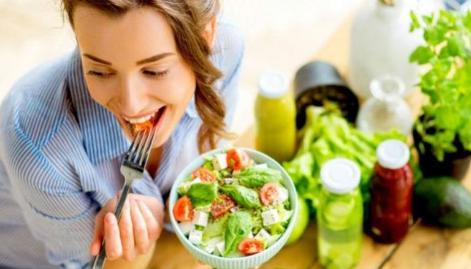
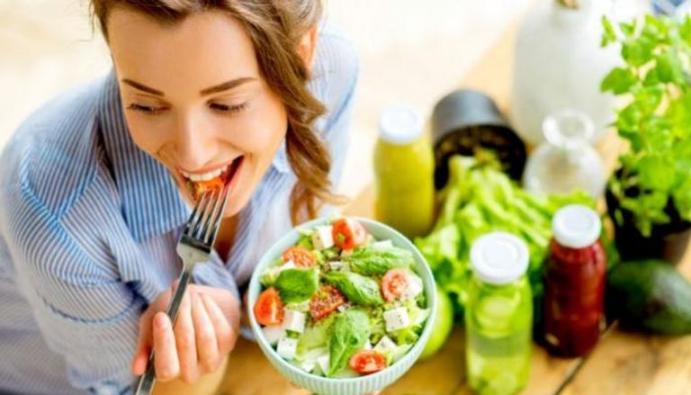

عن التغذية الصحية
التغذية الصحية تساعد في تعزيز صحة الجسم وزيادة النشاط والطاقة، والحفاظ على وزن مثالي.
التغذية الصحية تساعد في تعزيز صحة الجسم وزيادة النشاط والطاقة، والحفاظ على وزن مثالي.


خسارة الوزن تتطلب الجمع بين التغذية السليمة، النشاط البدني، وتغيير العادات اليومية. إليك أهم النصائح المدعومة علمياً لتحقيق نتائج مستدامة:
البروتين يساعد على تعزيز الشبع وتقليل الرغبة في تناول الطعام. أمثلة: البيض، السمك، الدجاج، المكسرات.
الماء يساهم في تحسين عملية الأيض وتقليل الجوع. يُنصح بشرب كوب ماء قبل كل وجبة.
اجمع بين التمارين الهوائية (مثل الجري والمشي السريع) وتمارين القوة لتحسين حرق الدهون وبناء العضلات.
الأطعمة السكرية والكربوهيدرات المعالجة تزيد من مستويات الجوع. اختر الكربوهيدرات الصحية مثل الأرز البني والشوفان.
 

زيادة الوزن تحتاج إلى خطة غذائية متوازنة تجمع بين تناول المزيد من السعرات الحرارية وبناء العضلات. إليك النصائح العملية لتحقيق ذلك:
زيادة كمية الطعام يومياً، مع التركيز على الأطعمة الغنية بالسعرات مثل الأرز، البطاطا، والمكسرات. نصيحة: أضف 500-1000 سعرة حرارية يومياً.
البروتين ضروري لبناء العضلات. اختر اللحوم، البيض، منتجات الألبان، والبقوليات. نصيحة: استهدف 1.5-2 جم من البروتين لكل كجم من وزنك.
تساعد التمارين مثل رفع الأثقال على بناء العضلات بدلاً من زيادة الدهون فقط. نصيحة: مارس التمارين 3-4 مرات أسبوعياً.
بدلاً من 3 وجبات يومياً، تناول 5-6 وجبات صغيرة لتوفير طاقة مستمرة للجسم. نصيحة: لا تنسَ الوجبات الخفيفة الصحية بين الوجبات.


الحفاظ على الوزن يتطلب التوازن بين النظام الغذائي الصحي والنشاط البدني المنتظم. إليك النصائح العملية للحفاظ على وزن مثالي:
ركز على تناول الكميات المناسبة من السعرات الحرارية بما يتناسب مع احتياجات جسمك. نصيحة: استخدم أطباق صغيرة للتحكم في الكمية.
مارس التمارين الرياضية لمدة 30 دقيقة على الأقل يومياً للحفاظ على معدل حرق السعرات الحرارية. نصيحة: امزج بين التمارين الهوائية وتمارين القوة.
شرب الماء يساعد على تحسين عملية الأيض ويقلل من الشعور بالجوع. نصيحة: اشرب كوب ماء قبل كل وجبة.
الحصول على نوم جيد ليلاً يساعد على تنظيم هرمونات الجوع وتقليل التوتر. نصيحة: حاول النوم 7-8 ساعات يومياً.
أدخل احتياجك من السعرات للحصول على تفاصيل التقسيم.
تعرف على المنتجات الغذائية التي تحتوي على إضافات تعزز صحتك مثل البروبيوتيك، أوميغا 3، وفيتامين د.
يحتوي على بكتيريا مفيدة لدعم صحة الأمعاء والجهاز المناعي.
مصدر ممتاز لدعم صحة القلب والدماغ.
يدعم صحة العظام ويعزز امتصاص الكالسيوم.

يعتمد هذا النظام على توقيت تناول الطعام بما يتناسب مع إيقاع الساعة البيولوجية للجسم، لتحسين التمثيل الغذائي وصحة الجهاز الهضمي.
| الوقت | الوجبة | المكونات الموصى بها | الفائدة |
|---|---|---|---|
| 7:00 - 9:00 صباحًا | الفطور | الشوفان، الفواكه، البيض | زيادة الطاقة وتحفيز الحرق |
| 12:00 - 2:00 ظهرًا | الغداء | البروتين، الدهون الصحية، الكربوهيدرات المعقدة | تحسين الهضم ودعم النشاط اليومي |
| 6:00 - 8:00 مساءً | العشاء | البروتين، الخضروات | تحسين جودة النوم وتقليل الدهون |
| 10:00 - 11:00 صباحًا / 4:00 - 5:00 مساءً | وجبة خفيفة | اللوز، الزبادي، الفاكهة | تقليل الجوع والحفاظ على النشاط |


في ظل انتشار الأمراض والأوبئة، يعد تعزيز المناعة ضرورة أساسية للحفاظ على صحة الجسم. يمكن تحقيق ذلك من خلال التغذية السليمة التي توفر العناصر الغذائية اللازمة لدعم الجهاز المناعي.
| الوجبة | المكونات | الفوائد |
|---|---|---|
| الفطور | عصير برتقال طبيعي، شوفان مع زبادي، مكسرات | تعزيز الطاقة والمناعة بفيتامين سي والبروبيوتيك. |
| الغداء | سمك مشوي، أرز بني، خضروات طازجة | دعم الجسم بالبروتين والزنك. |
| العشاء | سلطة الأفوكادو، شوربة العدس | وجبة خفيفة غنية بالدهون الصحية. |
| وجبة خفيفة | حفنة لوز، كوب شاي أخضر | مصدر مضادات الأكسدة. |
| للرجال | للنساء | ||
|---|---|---|---|
| الطول (سم) | الوزن (كجم) | الطول (سم) | الوزن (كجم) |
| 155 | 58.3 | 142 | 48.3 |
| 157 | 60.5 | 145 | 50.4 |
| 160 | 62.6 | 147 | 51.6 |
| 162 | 63.7 | 150 | 52.7 |
| 165 | 65.8 | 152 | 54.8 |
| 167 | 66.9 | 155 | 55.5 |
| 170 | 69.2 | 157 | 57.1 |
| 172 | 71.4 | 160 | 58.5 |
| 175 | 73.6 | 162 | 60.4 |
| 177 | 75.8 | 165 | 63.6 |
| 180 | 77.9 | 167 | 65.8 |
| 182 | 80.1 | 170 | 66.9 |
| 185 | 82.3 | 172 | 68.6 |
| 187 | 84.7 | 175 | 70.3 |
| 190 | 86.8 | 177 | 72.6 |
| المادة | الكمية | بروتين (غم) | دهون (غم) | كربوهيدرات (غم) | سعرات حرارية |
|---|---|---|---|---|---|
| بيضة كبيرة | 1 بيضة | 6.25 | 5 | 0.5 | 75 |
| بياض بيضة | 1 بياض | 3.5 | 0 | 0.35 | 16.5 |
| صفار بيضة | 1 صفار | 2.7 | 5 | 0.5 | 55 |
| جبنة كاملة الدسم | 100 غم | 8 | 8 | 1 | 115 |
| جبنة قليلة الدسم | 100 غم | 8 | 5 | 1 | 88 |
| لبن كامل الدسم | 100 غم | 8 | 8 | 8 | 115 |
| لبن قليل الدسم | 100 غم | 8 | 5 | 8 | 88 |
| جبنة مثلثات كاملة الدسم | مثلث واحد | 1 | 8 | 1 | 55 |
| جبنة مثلثات قليلة الدسم | مثلث واحد | 1 | 5 | 1 | 35 |
| جبنة قريش كاملة الدسم | 100 غم | 16 | 8 | 3 | 160 |
| جبنة قريش قليلة الدسم | 100 غم | 17 | 2 | 3 | 90 |
| حليب كامل الدسم | كوب | 8 | 8 | 11 | 150 |
| حليب قليل الدسم | كوب | 8 | 5 | 12 | 120 |
| لبن زبادي قليل الدسم | علبة طعام | 8 | 2 | 5.5 | 60 |
| كريمة لباني مخفوقة | ملعقة طعام | 0.3 | 2 | 0.3 | 28.4 |